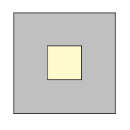
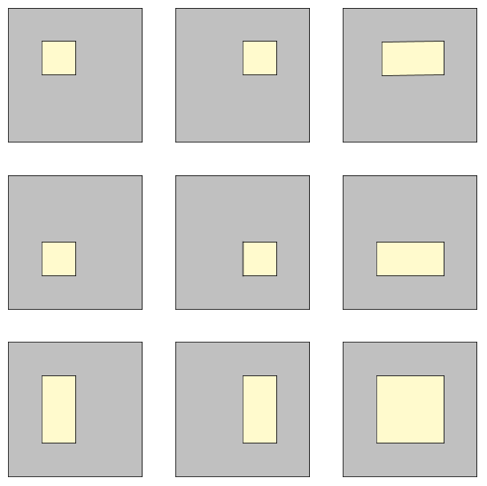

Assuming that two points are chosen randomly (with uniform distribution) within a rectangle, it is possible to determine the expected value of the distance between these two points.
For example, the expected distance between two random points in a unit square is about 0.521405, while the expected distance between two random points in a rectangle with side lengths 2 and 3 is about 1.317067.
Now we define a hollow square lamina of size n to be an integer sized square with side length n ≥ 3 consisting of n2 unit squares from which a rectangle consisting of x × y unit squares (1 ≤ x,y ≤ n - 2) within the original square has been removed.
For n = 3 there exists only one hollow square lamina:

For n = 4 you can find 9 distinct hollow square laminae, allowing shapes to reappear in rotated or mirrored form:

Let S(n) be the sum of the expected distance between two points chosen randomly within each of the possible hollow square laminae of size n. The two points have to lie within the area left after removing the inner rectangle, i.e. the gray-colored areas in the illustrations above.
For example, S(3) = 1.6514 and S(4) = 19.6564, rounded to four digits after the decimal point.
Find S(40) rounded to four digits after the decimal point.